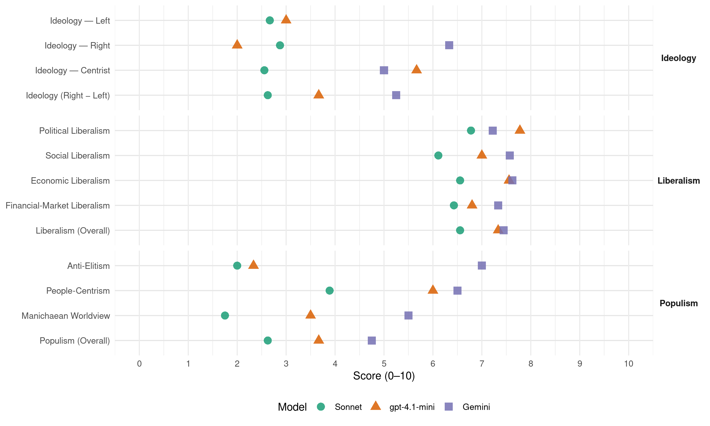

AKP (Turkey, 2015)
manifesto_id 74628_201511
Get full text: This site shows derived annotations and short verbatim quotes only. The full manifesto text is © Manifesto Project / WZB — obtain it via manifesto-project.wzb.eu using the manifesto_id above.
Headline scores
| Dimension | Sonnet | gpt-4.1-mini | Gemini |
|---|---|---|---|
| Populism (Overall) | 2.6 | 3.7 | 4.8 |
| Anti-Elitism | 2.0 | 2.3 | 7.0 |
| People-Centrism | 3.9 | 6.0 | 6.5 |
| Manichaean Worldview | 1.8 | 3.5 | 5.5 |
| Ideology (Right − Left) | 2.6 | 3.7 | 5.2 |
| Liberalism (Overall) | 6.6 | 7.3 | 7.4 |
| Political Liberalism | 6.8 | 7.8 | 7.2 |
| Social Liberalism | 6.1 | 7.0 | 7.6 |
| Economic Liberalism | 6.6 | 7.6 | 7.6 |
| Financial-Market Liberalism | 6.4 | 6.8 | 7.3 |
Evidence per dimension
Economic Liberalism
Gemini · score 7.0 · verified · chunk 1
“teşebbüs hürriyetlerinin önündeki tüm engellerin kaldırılması”
İfade, inanç ve teşebbüs hürriyetlerinin önündeki tüm engellerin kaldırılması AK Parti’nin temel prensibidir.
Gemini · score 7.0 · verified · chunk 2
“özel sektörün eğitim finansmanındaki”
Özel sektörün eğitim finansmanındaki payının artırılması amacıyla 2015
Gemini · score 7.0 · verified · chunk 3
“özel sektörün öncülük edeceği yeni”
verimli bir şekilde çalıştırılarak istihdam ve katma değer üretmesi için özel sektörün öncülük edeceği yeni işletme modellerini hayata
Gemini · score 9.0 · verified · chunk 4
“serbest piyasa ekonomisine dayalı ekonomik kalkınma”
Dışa açık ve dünyayla entegre bir ekonomik yapıyla yatırım ortamının daha da iyileştirilmesi, serbest piyasa ekonomisine dayalı ekonomik kalkınma anlayışımızın vazgeçilmez prensibidir.
Gemini · score 9.0 · verified · chunk 5
“piyasa ekonomisinin kuralları çerçevesinde kamu işletmeciliğinden”
AK Parti olarak piyasa ekonomisinin kuralları çerçevesinde kamu işletmeciliğinden mümkün olduğunca çekilmeyi hedefliyoruz.
Gemini · score 7.0 · verified · chunk 6
“serbest girişimcinin yanında olan AK Parti”
Teşebbüs hürriyetinin ve serbest girişimcinin yanında olan AK Parti, girişimcisi güçlü toplumların rekabet gücünün
Gemini · score 8.0 · verified · chunk 7
“haberleşme sektörünü 2004 yılında rekabete açtık”
Elektronik haberleşme sektörünü 2004 yılında rekabete açtık. Sektörün rekabete açılmasından
Gemini · score 7.0 · verified · chunk 8
“ticareti ve uluslararası doğrudan yatırımları”
elde ettiğimiz kazanımlar, öncelikli olarak ticareti ve uluslararası doğrudan yatırımları artırarak ekonomik refahımızı
gpt-4.1-mini · score 7.0 · verified · chunk 1
“Demokrasi ve kalkınma birlikte yürüyen süreçlerdir”
Demokrasi ve kalkınma birlikte yürüyen süreçlerdir. Demokrasi alanında atacağımız her adım, aynı zamanda kalkınmamıza da yeni bir soluk ve ivme kazandıracaktır. İnsani kalkınma ilkelerimiz ve tüm dünyada cazibe merkezi haline gelebilme üst amacımız ışığında, demokrasimizin standartlarını daha ileri bir düzeye taşıyacağız…
gpt-4.1-mini · score 7.0 · verified · chunk 2
“Kaynaklarımızı israf etmeden, halkımızın ihtiyaçlarını ve taleplerini karşılamaya çalıştık”
Bunun yerine birlikte sorunları tanımlama, birlikte çözümler arama gayreti içerisinde olduk. Halkımıza kurallar dayatma yerine halka hizmet yolunda hayatı kolaylaştırıcı adımlar atmayı esas aldık. Daha az maliyetle, daha fazla hizmet üretme prensibinden hareket ettik. Kaynaklarımızı israf etmeden, halkımızın ihtiyaçlarını ve taleplerini karşılamaya çalıştık.
gpt-4.1-mini · score 7.0 · verified · chunk 3
“Kadınların istihdamını teşvik amacıyla sigorta prim işveren payının belirli oranlarda karşıladık”
Kadınların istihdamını teşvik amacıyla sigorta prim işveren payının belirli oranlarda karşıladık. Kadınlarımızın işgücüne katılım oranı, 2002 yılında yüzde 27,9 iken, son yıllarda kadın istihdamı alanında izlediğimiz politikalar ve yürüttüğümüz projelerle bu oranı 2014 yılında yüzde 33,6’ya yükselttik.
gpt-4.1-mini · score 8.0 · verified · chunk 4
“serbest piyasa ekonomisine dayalı ekonomik kalkınma anlayışımızın vazgeçilmez prensibidir”
Dışa açık vedünyayla entegre bir ekonomik yapıyla yatırım ortamının daha da iyileştirilmesi, serbest piyasa ekonomisine dayalı ekonomik kalkınma anlayışımızın vazgeçilmez prensibidir.
gpt-4.1-mini · score 8.0 · verified · chunk 5
“AK Parti olarak piyasa ekonomisinin kuralları çerçevesinde kamu işletmeciliğinden mümkün olduğunca çekilmeyi hedefliyoruz”
…3.7. Kamu Sermayeli Şirketler ve Özelleştirme AK Parti olarak piyasa ekonomisinin kuralları çerçevesinde kamu işletmeciliğinden mümkün olduğunca çekilmeyi hedefliyoruz. Bu hedef doğrultusunda, birinci atılım döneminde büyük miktarda özelleştirmeler gerçekleştirdik. İkinci atılım döneminde ise, bir taraftan özelleştirme uygulamalarına devam ederken, diğer taraftan kamunun işletmeci olduğu alanlarda etkinliği artıracağız. Piyasa ekonomisinin etkin ve kamu müdahalesinden olabildiğince arınmış bir şekilde işlemesini teminen, KİT’lerin faaliyetlerini, ekonomik amaç ve hedeflere dayalı olarak daha kaliteli bir biçimde yürütmeyi temel bir prensip olarak devam ettireceğiz…
gpt-4.1-mini · score 8.0 · verified · chunk 6
“serbest piyasa, rekabet, işletme, vergi, ticaret, özelleştirme”
…serbest piyasa, rekabet, işletme, vergi, ticaret, özelleştirme ve deregülasyon politikaları…
gpt-4.1-mini · score 8.0 · verified · chunk 7
“piyasa, rekabet, işletme, vergi, ticaret, özelleştirme”
…serbest piyasa ekonomisi, rekabet, işletmelerin desteklenmesi, vergi düzenlemeleri ve ticaretin geliştirilmesi gibi ekonomik politikalar metinde detaylıca ele alınmıştır. KOSGEB destekleri, Kredi Garanti Fonu ve girişim sermayesi gibi mekanizmalar vurgulanmaktadır…
gpt-4.1-mini · score 8.0 · verified · chunk 8
“ihracatın artması, yerli ve yabancı yatırımların yüksek ivme kazanması bunun sonucudur”
Ekonomideki başarılarımız ile dış politika başarılarımız arasında yakın bir ilişki kurduk. Dışa dönük, kendine güvenen, üreten iş dünyamız hem ülkemizin gücüne katkı yapmakta, hem de dış politikamızın onlara açtığı alanlarda dünya ile ilişkilerini güçlendirmektedir. İhracatın artması, yerli ve yabancı yatırımların yüksek ivme kazanması bunun sonucudur.
gpt-4.1-mini · score 7.0 · verified · chunk 9
“rekabet gücümüzün artırılması, katma değeri yüksek ürünlerin üretimi için Ar-Ge yatırımları öncelikli olacak”
Yeni Türkiye’de, rekabet gücümüzün artırılması, katma değeri yüksek ürünlerin üretimi için Ar-Ge yatırımları öncelikli olacak, her iş dünya ölçeğinde, dünya standartlarında yapılacak.
Sonnet · score 6.0 · verified · chunk 1
“üretim ve yatırım kararlarının daha sağlıklı”
Hukukun sağladığı öngörülebilirlik ortamında belirsizliğin azalacağını, üretim ve yatırım kararlarının daha sağlıklı ve nitelikli bir şekilde alınacağını, böylece kalkınma sürecimizin hızlanacağını düşünüyoruz
Sonnet · score 6.0 · verified · chunk 2
“eğitimin finansmanında özel sektörün payının artırılması”
eğitimin finansmanında özel sektörün payının artırılması yönünde kamu-özel ortaklığı gibi yeni arz ve işletim modellerinin kullanılmasını sağlayacağız.
Sonnet · score 6.0 · verified · chunk 3
“işletmelerimizin rekabet gücünü artıracağız”
istihdamın gelişimine sağlıklı bir zemin oluştururken, işletmelerimizin rekabet gücünü artıracağız.
Sonnet · score 7.0 · verified · chunk 4
“serbest piyasa ekonomisine dayalı ekonomik kalkınma”
dışa açık ve dünyayla entegre bir ekonomik yapıyla yatırım ortamının daha da iyileştirilmesi, serbest piyasa ekonomisine dayalı ekonomik kalkınma anlayışımızın vazgeçilmez prensibidir
Sonnet · score 8.0 · verified · chunk 5
“piyasa ekonomisinin etkin ve kamu müdahalesinden”
Piyasa ekonomisinin etkin ve kamu müdahalesinden olabildiğince arınmış bir şekilde işlemesini teminen, KİT’lerin faaliyetlerini, ekonomik amaç ve hedeflere dayalı olarak daha kaliteli bir biçimde yürütmeyi temel bir prensip olarak devam ettireceğiz
Sonnet · score 7.0 · verified · chunk 6
“serbest girişimcinin yanında olan AK Parti”
Teşebbüs hürriyetinin ve serbest girişimcinin yanında olan AK Parti, girişimcisi güçlü toplumların rekabet gücünün, teknolojiye dayalı, katma değeri yüksek mal ve hizmet üreteceğinin ve ihraç edeceğinin bilincindedir.
Sonnet · score 7.0 · verified · chunk 7
“Elektronik haberleşme sektörünü 2004 yılında rekabete açtık”
Elektronik haberleşme sektörünü 2004 yılında rekabete açtık. Sektörün rekabete açılmasından sonra AB düzenlemeleri ile uyumlu ikincil mevzuat düzenlemelerini yaptık.
Sonnet · score 6.0 · verified · chunk 8
“ihracatın artması, yerli ve yabancı yatırımların yüksek ivme kazanması”
İhracatın artması, yerli ve yabancı yatırımların yüksek ivme kazanması bunun sonucudur.
Sonnet · score 6.0 · verified · chunk 9
“rekabet gücümüzün artırılması, katma değeri yüksek”
Yeni Türkiye’de, rekabet gücümüzün artırılması, katma değeri yüksek ürünlerin üretimi için Ar-Ge yatırımları öncelikli olacak
Financial-Market Liberalism
Gemini · score 7.0 · verified · chunk 2
“Finansal piyasalarda güven, istikrar”
Finansal piyasalarda güven, istikrar ve şeffaflığın sağlanmasını, kredi
Gemini · score 7.0 · verified · chunk 3
“krediler için Kredi Garanti Fonu”
kullanacakları krediler için Kredi Garanti Fonu aracılığıyla yüzde 85
Gemini · score 8.0 · verified · chunk 4
“mali piyasalarda rekabet gücü kazandırılması”
Mali piyasalara rekabet gücü kazandırılması, risklerin asgariye indirilmesi, etkin ve şeffaf bir finansal sistemin oluşturulması amacıyla
Gemini · score 8.0 · verified · chunk 5
“altın şeklinde tutulan tasarrufların sisteme çekilmesi”
Altın bankacılığı başta olmak üzere, altın şeklinde tutulan tasarrufların sisteme çekilmesi için çeşitli mekanizmalar geliştirileceğiz.
Gemini · score 6.0 · verified · chunk 6
“girişim sermayesi ve bireysel katılım sermayesi”
70 yeni OSB ve 1 milyon ilave istihdamdır. Girişim sermayesi ve bireysel katılım sermayesi gibi yenilikçi finansman imkânlarını
Gemini · score 8.0 · verified · chunk 7
“Girişim sermayesi ve bireysel katılım sermayesi”
yeni OSB ve 1 milyon ilave istihdamdır. Girişim sermayesi ve bireysel katılım sermayesi gibi yenilikçi finansman imkânlarını
gpt-4.1-mini · score 6.0 · verified · chunk 2
“Bankacılık Kanununu çıkardık”
Finansal piyasalarda güven, istikrar ve şeffaflığın sağlanmasını, kredi sisteminin etkin bir şekilde çalışmasını ve tasarruf sahiplerinin hak vemenfaatlerinin korunmasını sağlamak amacıyla Bankacılık Kanununu çıkardık.
gpt-4.1-mini · score 7.0 · verified · chunk 4
“Bankacılık Kanununu yürürlüğe koyduk”
Mali piyasalara rekabet gücü kazandırılması, risklerin asgariye indirilmesi, etkin ve şeffaf bir finansal sistemin oluşturulması amacıyla uluslararası standartlarla uyumlu Bankacılık Kanununu yürürlüğe koyduk.
gpt-4.1-mini · score 7.0 · verified · chunk 5
“Bireysel emeklilik sisteminde değişiklikler yaptık. Düzenleme ile bireysel emeklilik sistemine ödenen primlerin belli oranda gelir vergisinden düşülmesine dayanan teşvik uygulaması yerine, doğrudan yüzde 25’lik devlet katkısı uygulamasına geçtik”
…Tasarrufları baskılayan yurtiçi kredi hacmindeki aşırı hızlanmayı önlemek amacıyla, makro-ihtiyati düzenlemeler yaptık. Bu kapsamda, kredi kartı limiti ve gelir ilişkisini yeniden düzenledik; kredi kartları taksitlerinde uygulanan risk ağırlıklarını ve kredi kartı asgari ödeme tutarlarını artırdık. Tüketici kredilerinde vadeleri yeniden düzenledik , taşıt kredilerinde kredi/ değer oranı düzenlemesi yaptık ve kredi kartlarında taksit sayılarını yeniden belirledik. Ayrıca, tasarrufların üretken alanlara yönlendirilmesi ve kredi kompozisyonunun ticari krediler lehine değişmesi hedeflerimiz çerçevesinde, ihracat kredileri ve KOBİ kredileri için uygulanan genel karşılık oranlarını düşürdük ve Eximbank ihracat kredisini sigorta poliçeleri kredi riski azaltım teknikleri kapsamına aldık. Bireysel emeklilik sisteminde değişiklikler yaptık. Düzenleme ile bireysel emeklilik sistemine ödenen primlerin belli oranda gelir vergisinden düşülmesine dayanan teşvik uygulaması yerine, doğrudan yüzde 25’lik devlet katkısı uygulamasına geçtik. Tasarrufları baskılayan yurtiçi kredi hacmindeki aşırı hızlanmayı önlemek amacıyla, makro-ihtiyati düzenlemeler yaptık…
gpt-4.1-mini · score 7.0 · verified · chunk 6
“finans, banka, sermaye, kredi, yatırım, piyasa”
…finans, banka, sermaye, kredi, yatırım, piyasa tabanlı düzenlemeler ve şeffaflık…
gpt-4.1-mini · score 7.0 · verified · chunk 7
“finans, banka, kredi, sermaye, yatırım, piyasa”
…finansal piyasalara erişim, banka kredileri, yatırım destekleri ve sermaye piyasalarının geliştirilmesi konularında düzenlemeler ve destekler sunulmaktadır. Kredi faiz oranlarının düşürülmesi ve finansmana erişimin artırılması hedeflenmektedir…
Sonnet · score 7.0 · verified · chunk 2
“Finansal piyasalarda güven, istikrar ve şeffaflığın sağlanmasını”
Finansal piyasalarda güven, istikrar ve şeffaflığın sağlanmasını, kredi sisteminin etkin bir şekilde çalışmasını ve tasarruf sahiplerinin hak ve menfaatlerinin korunmasını sağlamak amacıyla Bankacılık Kanununu çıkardık.
Sonnet · score 6.0 · verified · chunk 3
“kadın girişimcilerin finansmana erişimlerinin”
Kadın girişimcilerin finansmana erişimlerinin kolaylaştırılması ve böylelikle kadın istihdamının artırılması amacıyla yaptığımız düzenlemeyle
Sonnet · score 7.0 · verified · chunk 4
“etkin ve şeffaf bir finansal sistemin oluşturulması”
Mali piyasalara rekabet gücü kazandırılması, risklerin asgariye indirilmesi, etkin ve şeffaf bir finansal sistemin oluşturulması amacıyla uluslararası standartlarla uyumlu Bankacılık Kanununu yürürlüğe koyduk
Sonnet · score 7.0 · verified · chunk 5
“makro-ihtiyati düzenlemeler yaptık”
Tasarrufları baskılayan yurtiçi kredi hacmindeki aşırı hızlanmayı önlemek amacıyla, makro-ihtiyati düzenlemeler yaptık. Bu kapsamda, kredi kartı limiti ve gelir ilişkisini yeniden düzenledik
Sonnet · score 6.0 · verified · chunk 6
“KOBİ’lerin borsaya açılma faaliyetlerini destekleyecek”
KOBİ’lerin borsaya açılma faaliyetlerini destekleyecek; Kredi Garanti Fonu’nun kefalet sağladığı KOBİ sayısını artıracak ve Girişim Sermayesi Fonlarını yaygınlaştıracağız.
Sonnet · score 6.0 · verified · chunk 7
“Girişim sermayesi ve bireysel katılım sermayesi gibi yenilikçi finansman imkânlarını”
Girişim sermayesi ve bireysel katılım sermayesi gibi yenilikçi finansman imkânlarını ve teknolojik girişimcilik destek modellerini artırma konusunda çalışmalarımızı sürdürmekteyiz.
Sonnet · score 6.0 · verified · chunk 8
“ticaret ve finans başta olmak üzere her alanda”
artan uluslararası ilişkiler, ülkemiz için ticaret ve finans başta olmak üzere her alanda yeni işbirliği imkânları sağlamakta, bu da ülkemizin kalkınmasına önemli katkı sağlamaktadır.
Political Liberalism
Gemini · score 8.0 · verified · chunk 1
“demokrasi, insan hakları ve hukukun üstünlüğünün”
yeni anayasayı Türkiye’de demokrasi, insan hakları ve hukukun üstünlüğünün kökleşmesi bakımından hayati bir aşama olarak
Gemini · score 8.0 · verified · chunk 2
“hukukun üstünlüğünü temel alacak”
Bu duruş ve mücadelemizde hukukun üstünlüğünü temel alacak; güvenlik hizmetlerini şeffaflık
Gemini · score 7.0 · verified · chunk 3
“demokratik ve bilimsel eğitim zeminlerini”
üniversitelerde gençlerimizin demokratik ve bilimsel eğitim zeminlerini daha da güçlendirecek
Gemini · score 8.0 · verified · chunk 4
“ileri demokratik standartları ve evrensel hukuk normlarına”
AK Parti olarak sürdürülebilir bir ekonomik kalkınma için, ileri demokratik standartları ve evrensel hukuk normlarına dayalı olarak işleyen adil bir yargı düzenini esas aldık.
Gemini · score 8.0 · verified · chunk 5
“açık, şeffaf ve hesapverebilir bir yapıda”
Kamu sermayeli kuruluşların açık, şeffaf ve hesapverebilir bir yapıda çalışmalarını sağlayacak; yönetim sistemlerinin
Gemini · score 5.0 · verified · chunk 6
“fikri mülkiyet sisteminin hukuki ve kurumsal yapısını”
önemli bir adım daha atarak… Fikri mülkiyet sisteminin hukuki ve kurumsal yapısını büyük ölçüde tamamladık.
Gemini · score 7.0 · verified · chunk 7
“fikir hürriyetinden iyi düzenlemelere varıncaya”
Bu çerçevede, fikir hürriyetinden iyi düzenlemelere varıncaya kadar, geniş bir perspektif içinde
Gemini · score 7.0 · verified · chunk 8
“demokrasi, insan haklarına saygılı”
Özellikle komşu bölgelerdeki demokrasi, insan haklarına saygılı siyasi istikrar ve ekonomik kalkınma
Gemini · score 7.0 · verified · chunk 9
“demokratik ve anayasal bir hakkın”
oy kullanmalarını sağladık. Böylece, demokratik ve anayasal bir hakkın gereğinin yerine getirilmesinin
gpt-4.1-mini · score 9.0 · verified · chunk 1
“AK Parti’nin siyaset anlayışını demokrasi, hizmet ve sorumluluk ilkeleri üzerine kurduk”
Ülkemizin güçlü bir hukuk devleti olması yönünde önemli adımlar attık. AK Parti’nin siyaset anlayışını demokrasi, hizmet ve sorumluluk ilkeleri üzerine kurduk. Yıllarca hırpalanan, güven erozyonuna uğrayan, milleti temsil etme yeteneğini yitiren siyaseti sonlandırarak, siyasetin milletle olan bağını güçlü bir şekilde kurduk…
gpt-4.1-mini · score 8.0 · verified · chunk 2
“şeffaf, katılımcı ve hesap verebilir bir biçimde gerçekleşmesi temel şiarımızdır”
AK Parti olarak, devletin gerçek ve tek sahibi olarak gördüğümüz vatandaşlarımız adına yürüttüğümüz tüm işlerin şeffaf, katılımcı ve hesap verebilir bir biçimde gerçekleşmesi temel şiarımızdır. Bu şiarla, vatandaşlarımızın ihtiyaç ve taleplerine dayalı; başarılı, şeffaf bir yönetimin esasının adalet temelli olduğunu biliyoruz.
gpt-4.1-mini · score 8.0 · verified · chunk 3
“Kadın erkek fırsat eşitliği ilkesini, Anayasanın özellikle 10. maddesinde yaptığımız değişikliklerle güçlendirdik”
Kadınlarımız için pozitif ayrımcılık sağlanmasını anayasal güvenceye kavuşturduk. Kadın erkek fırsat eşitliği ilkesini, Anayasanın özellikle 10. maddesinde yaptığımız değişikliklerle güçlendirdik. Artık kadınlarımız parlamentoda daha güçlü temsil ediliyorlar.
gpt-4.1-mini · score 8.0 · verified · chunk 4
“Yargı reformu başta olmak üzere, katılımcı demokrasi ve yönetim alanında sağlamakta olduğumuz ilerlemeler”
AK Parti olarak sürdürülebilir bir ekonomik kalkınma için, ileri demokratik standartları ve evrensel hukuk normlarına dayalı olarak işleyen adil bir yargı düzenini esas aldık. Yargı reformu başta olmak üzere, katılımcı demokrasi ve yönetim alanında sağlamakta olduğumuz ilerlemeler, önemli bir aşamaya gelmiş olan ekonomik dönüşüm sürecimizi sağlamlaştırmak açısından da kritik bir rol oynamaktadır.
gpt-4.1-mini · score 7.0 · verified · chunk 5
“Yargı sürecinin hızlanması, yatırımcılar için büyük önem arz eden tahkimin ülkemizde yaygınlaştırılması”
…Yatırım Ortamının İyileştirilmesi Reform Programı kapsamında birçok düzenleme gerçekleştirdik. Bu çerçevede;Bir günde şirket kurulmasını mümkün hale getirdik. Doğrudan yabancı yatırım için aranılan en düşük sermaye miktarını kaldırdık. İzin sisteminden bilgilendirme sistemine geçtik. Şirket kurma öncesindeki işlemlerde, yabancı ve yerli yatırımlar arasındaki ayırımı kaldırdık. Türkiye’de çalışacak yabancılara verilecek çalışma izinleri ile ilgili esasları belirledik. Çalışma ve Sosyal Güvenlik Bakanlığımızı bu izinlerle ilgili tek yetkili kuruluş olarak tespit ettik. 26 düzey-2 bölgesinde kurulan Kalkınma Ajansları bünyesinde, illerde yatırımcıya sağlıklı bilgilendirme yapacak ve bürokratik işlemlerini kolaylaştıracak bir mekanizma olarak Yatırım Destek Ofislerini oluşturduk. Yargı sürecinin hızlanması, yatırımcılar için büyük önem arz eden tahkimin ülkemizde yaygınlaştırılması ve tahkim kültürünün yerleştirilmesine yönelik düzenlemeleri içeren Hukuk Muhakemeleri Kanununu yürürlüğe koyduk. Büyük yatırımların yanında bölgesel ve sektörel öncelikleri dikkate alarak hazırlanan yeni bir yatırım teşvik sistemini uygulamaya başladık…
gpt-4.1-mini · score 7.0 · verified · chunk 6
“demokrasi, haklar, seçimler, mahkemeler, medya”
…birleşik demokrasi, haklar, seçimler, mahkemeler, medya özgürlüğü ve hukukun üstünlüğü…
gpt-4.1-mini · score 7.0 · verified · chunk 7
“demokrasi, haklar, seçimler, mahkemeler, medya”
…birinci atılım döneminde, bilgi toplumuna dönüşümün Türkiye’yi gelişmiş ülkeler arasına taşıyacağını ortaya koyduk ve bu alanda ciddi bir zihniyet dönüşümünün önünü açtık. Demokrasi, haklar, seçimler, mahkemeler, medya özgürlüğü gibi kavramlar metinde yer almaktadır…
gpt-4.1-mini · score 8.0 · verified · chunk 8
“demokrasi, insan hakları ve itibarlı dış politikayı tesis etme yolunda da tarihi adımlar atıyoruz”
Ekonomide istikrarlı ve büyüyen bir Türkiye inşa ederken, demokratikleşme, insan hakları ve itibarlı dış politikayı tesis etme yolunda da tarihi adımlar atıyoruz. Dış politikamızın temel parçası olan küresel kalkınma ve insani diplomasi gündemine önemli katkılar verdik, vermeye de devam ediyoruz.
gpt-4.1-mini · score 8.0 · verified · chunk 9
“daha demokratik, her alanda kaliteye odaklanmış bir dönemi ifade etmektedir”
Yeni Türkiye, insanı merkeze alan, özgürlük alanlarının genişletildiği, tabuların yıkılıp yasakların kaldırıldığı, daha demokratik, her alanda kaliteye odaklanmış bir dönemi ifade etmektedir.
Sonnet · score 8.0 · verified · chunk 1
“demokrasi, insan hakları ve hukukun üstünlüğünün”
yeni anayasayı Türkiye’de demokrasi, insan hakları ve hukukun üstünlüğünün kökleşmesi bakımından hayati bir aşama olarak görmekteyiz
Sonnet · score 7.0 · verified · chunk 2
“katılımcı demokrasimizi, şeffaflığı artan ve daha hesap verebilir”
İkinci atılım döneminde de katılımcı demokrasimizi, şeffaflığı artan ve daha hesap verebilir bir yönetim anlayışıyla güçlendirecek
Sonnet · score 6.0 · verified · chunk 3
“demokratik ve bilimsel eğitim zeminlerini”
Eğitimin her kademesinde ve üniversitelerde gençlerimizin demokratik ve bilimsel eğitim zeminlerini daha da güçlendireceğiz, özgürlükleri geliştirmeye devam edeceğiz.
Sonnet · score 7.0 · verified · chunk 4
“ileri demokratik standartları ve evrensel hukuk normlarına”
sürdürülebilir bir ekonomik kalkınma için, ileri demokratik standartları ve evrensel hukuk normlarına dayalı olarak işleyen adil bir yargı düzenini esas aldık
Sonnet · score 7.0 · verified · chunk 5
“açık, şeffaf ve hesapverebilir bir yapıda”
Kamu sermayeli kuruluşların açık, şeffaf ve hesapverebilir bir yapıda çalışmalarını sağlayacak; yönetim sistemlerinin, rekabet edebilir ve iyi yönetişim ilkelerine uygun bir yapıda oluşmasını temin edecek yönetişim reformunu gerçekleştireceğiz
Sonnet · score 6.0 · verified · chunk 6
“Türk Ticaret Kanunu ve Türk Borçlar Kanununu”
Türk Ticaret Kanunu ve Türk Borçlar Kanununu günümüz sosyal ve ekonomik ihtiyaçlarına cevap verecek şekilde yeniledik.
Sonnet · score 7.0 · verified · chunk 7
“ileri demokrasi, yönetişimin kurumsallaşması, vatandaşın güçlendirilmesi”
Yerel yönetimleri, salt bir idari ve teknik aygıt olarak görmek değil; ileri demokrasi, yönetişimin kurumsallaşması, vatandaşın güçlendirilmesi ve yönetime katılması, saydamlık ve hesap verebilirliğin tesisi ile kamu hizmet sunumunda etkinlik ve verimliliğin artırılmasının bir aracı olarak görmekteyiz.
Sonnet · score 7.0 · verified · chunk 8
“demokrasi, insan haklarına saygılı siyasi istikrar”
Özellikle komşu bölgelerdeki demokrasi, insan haklarına saygılı siyasi istikrar ve ekonomik kalkınma gibi hedefleri gerçekleştirmeye önem verirken, dünyanın başka yerlerindeki toplumların hayatını etkileyen sorunların çözümüne de katkı vermeye devam ettik.
Sonnet · score 6.0 · verified · chunk 9
“demokratik ve anayasal bir hakkın gereğinin”
Böylece, demokratik ve anayasal bir hakkın gereğinin yerine getirilmesinin yanında anavatana aidiyet bağlamında da önemli bir adım atılmasını sağlamış olduk.
Liberalism (Overall)
Gemini · score 8.0 · verified · chunk 1
“demokrasi, insan hakları ve hukukun üstünlüğünün”
yeni anayasayı Türkiye’de demokrasi, insan hakları ve hukukun üstünlüğünün kökleşmesi bakımından hayati bir aşama olarak
Gemini · score 8.0 · verified · chunk 2
“hukukun üstünlüğünü temel alacak”
Bu duruş ve mücadelemizde hukukun üstünlüğünü temel alacak; güvenlik hizmetlerini şeffaflık
Gemini · score 7.0 · verified · chunk 3
“kadın erkek fırsat eşitliği ilkesini”
güvenceye kavuşturduk. Kadın erkek fırsat eşitliği ilkesini, Anayasanın özellikle 10.
Gemini · score 8.0 · verified · chunk 4
“serbest piyasa ekonomisine dayalı ekonomik kalkınma”
Dışa açık ve dünyayla entegre bir ekonomik yapıyla yatırım ortamının daha da iyileştirilmesi, serbest piyasa ekonomisine dayalı ekonomik kalkınma anlayışımızın vazgeçilmez prensibidir.
Gemini · score 8.0 · verified · chunk 5
“piyasa ekonomisinin kuralları çerçevesinde kamu işletmeciliğinden”
AK Parti olarak piyasa ekonomisinin kuralları çerçevesinde kamu işletmeciliğinden mümkün olduğunca çekilmeyi hedefliyoruz.
Gemini · score 6.0 · verified · chunk 6
“serbest girişimcinin yanında olan AK Parti”
Teşebbüs hürriyetinin ve serbest girişimcinin yanında olan AK Parti, girişimcisi güçlü toplumların rekabet gücünün
Gemini · score 8.0 · verified · chunk 7
“fikir hürriyetinden iyi düzenlemelere varıncaya”
Bu çerçevede, fikir hürriyetinden iyi düzenlemelere varıncaya kadar, geniş bir perspektif içinde
Gemini · score 7.0 · verified · chunk 8
“demokrasi, insan haklarına saygılı”
Özellikle komşu bölgelerdeki demokrasi, insan haklarına saygılı siyasi istikrar ve ekonomik kalkınma
Gemini · score 7.0 · verified · chunk 9
“demokratik ve anayasal bir hakkın”
oy kullanmalarını sağladık. Böylece, demokratik ve anayasal bir hakkın gereğinin yerine getirilmesinin
gpt-4.1-mini · score 8.0 · verified · chunk 1
“AK Parti’nin siyaset anlayışını demokrasi, hizmet ve sorumluluk ilkeleri üzerine kurduk”
Ülkemizin güçlü bir hukuk devleti olması yönünde önemli adımlar attık. AK Parti’nin siyaset anlayışını demokrasi, hizmet ve sorumluluk ilkeleri üzerine kurduk. Yıllarca hırpalanan, güven erozyonuna uğrayan, milleti temsil etme yeteneğini yitiren siyaseti sonlandırarak, siyasetin milletle olan bağını güçlü bir şekilde kurduk…
gpt-4.1-mini · score 7.0 · verified · chunk 2
“şeffaf, katılımcı ve hesap verebilir bir biçimde gerçekleşmesi temel şiarımızdır”
AK Parti olarak, devletin gerçek ve tek sahibi olarak gördüğümüz vatandaşlarımız adına yürüttüğümüz tüm işlerin şeffaf, katılımcı ve hesap verebilir bir biçimde gerçekleşmesi temel şiarımızdır. Bu şiarla, vatandaşlarımızın ihtiyaç ve taleplerine dayalı; başarılı, şeffaf bir yönetimin esasının adalet temelli olduğunu biliyoruz.
gpt-4.1-mini · score 8.0 · verified · chunk 3
“Kadın erkek fırsat eşitliği ilkesini, Anayasanın özellikle 10. maddesinde yaptığımız değişikliklerle güçlendirdik”
Kadınlarımız için pozitif ayrımcılık sağlanmasını anayasal güvenceye kavuşturduk. Kadın erkek fırsat eşitliği ilkesini, Anayasanın özellikle 10. maddesinde yaptığımız değişikliklerle güçlendirdik. Artık kadınlarımız parlamentoda daha güçlü temsil ediliyorlar.
gpt-4.1-mini · score 7.0 · verified · chunk 4
“Yargı reformu başta olmak üzere, katılımcı demokrasi ve yönetim alanında sağlamakta olduğumuz ilerlemeler”
AK Parti olarak sürdürülebilir bir ekonomik kalkınma için, ileri demokratik standartları ve evrensel hukuk normlarına dayalı olarak işleyen adil bir yargı düzenini esas aldık. Yargı reformu başta olmak üzere, katılımcı demokrasi ve yönetim alanında sağlamakta olduğumuz ilerlemeler, önemli bir aşamaya gelmiş olan ekonomik dönüşüm sürecimizi sağlamlaştırmak açısından da kritik bir rol oynamaktadır.
gpt-4.1-mini · score 7.0 · verified · chunk 5
“AK Parti olarak piyasa ekonomisinin kuralları çerçevesinde kamu işletmeciliğinden mümkün olduğunca çekilmeyi hedefliyoruz”
…3.7. Kamu Sermayeli Şirketler ve Özelleştirme AK Parti olarak piyasa ekonomisinin kuralları çerçevesinde kamu işletmeciliğinden mümkün olduğunca çekilmeyi hedefliyoruz. Bu hedef doğrultusunda, birinci atılım döneminde büyük miktarda özelleştirmeler gerçekleştirdik. İkinci atılım döneminde ise, bir taraftan özelleştirme uygulamalarına devam ederken, diğer taraftan kamunun işletmeci olduğu alanlarda etkinliği artıracağız. Piyasa ekonomisinin etkin ve kamu müdahalesinden olabildiğince arınmış bir şekilde işlemesini teminen, KİT’lerin faaliyetlerini, ekonomik amaç ve hedeflere dayalı olarak daha kaliteli bir biçimde yürütmeyi temel bir prensip olarak devam ettireceğiz…
gpt-4.1-mini · score 7.0 · verified · chunk 6
“demokrasi, azınlık hakları, serbest piyasa, finansal piyasa”
…demokrasi, azınlık hakları, serbest piyasa, finansal piyasa düzenlemeleri ve rekabet…
gpt-4.1-mini · score 7.0 · verified · chunk 7
“demokrasi, eşitlik, piyasa, finans, haklar”
…demokrasi, eşitlik, piyasa ekonomisi ve finansal piyasa düzenlemeleri gibi liberal unsurlar metinde kapsamlı şekilde işlenmiştir.
gpt-4.1-mini · score 8.0 · verified · chunk 8
“demokrasi, insan hakları ve itibarlı dış politikayı tesis etme yolunda da tarihi adımlar atıyoruz”
Ekonomide istikrarlı ve büyüyen bir Türkiye inşa ederken, demokratikleşme, insan hakları ve itibarlı dış politikayı tesis etme yolunda da tarihi adımlar atıyoruz. Dış politikamızın temel parçası olan küresel kalkınma ve insani diplomasi gündemine önemli katkılar verdik, vermeye de devam ediyoruz.
gpt-4.1-mini · score 7.0 · verified · chunk 9
“daha demokratik, her alanda kaliteye odaklanmış bir dönemi ifade etmektedir”
Yeni Türkiye, insanı merkeze alan, özgürlük alanlarının genişletildiği, tabuların yıkılıp yasakların kaldırıldığı, daha demokratik, her alanda kaliteye odaklanmış bir dönemi ifade etmektedir.
Sonnet · score 7.0 · verified · chunk 1
“bireysel hak ve özgürlükler ile insan onurunu yüceltmeyi”
AK Parti, bireysel hak ve özgürlükler ile insan onurunu yüceltmeyi yeni anayasanın temel ahlaki referansı olarak kabul etmektedir
Sonnet · score 7.0 · verified · chunk 2
“hukukun üstünlüğünü temel alacak”
Bu duruş ve mücadelemizde hukukun üstünlüğünü temel alacak; güvenlik hizmetlerini şeffaflık, katılımcılık ve hesap verebilirliği artıracak mekanizmalarla daha fazla destekleyecek
Sonnet · score 6.0 · verified · chunk 3
“Kadın erkek fırsat eşitliği ilkesini”
Kadın erkek fırsat eşitliği ilkesini, Anayasanın özellikle 10. maddesinde yaptığımız değişikliklerle güçlendirdik.
Sonnet · score 7.0 · verified · chunk 4
“serbest piyasa ekonomisine dayalı ekonomik kalkınma”
dışa açık ve dünyayla entegre bir ekonomik yapıyla yatırım ortamının daha da iyileştirilmesi, serbest piyasa ekonomisine dayalı ekonomik kalkınma anlayışımızın vazgeçilmez prensibidir
Sonnet · score 7.0 · verified · chunk 5
“piyasa ekonomisinin etkin ve kamu müdahalesinden”
Piyasa ekonomisinin etkin ve kamu müdahalesinden olabildiğince arınmış bir şekilde işlemesini teminen, KİT’lerin faaliyetlerini, ekonomik amaç ve hedeflere dayalı olarak daha kaliteli bir biçimde yürütmeyi temel bir prensip olarak devam ettireceğiz
Sonnet · score 6.0 · verified · chunk 6
“serbest girişimcinin yanında olan AK Parti”
Teşebbüs hürriyetinin ve serbest girişimcinin yanında olan AK Parti, girişimcisi güçlü toplumların rekabet gücünün, teknolojiye dayalı, katma değeri yüksek mal ve hizmet üreteceğinin ve ihraç edeceğinin bilincindedir.
Sonnet · score 7.0 · verified · chunk 7
“rekabet ortamı ile 2003 yılında neredeyse hiç olmayan geniş bant”
Elektronik haberleşme alanında sağlanan serbestleşme sonunca oluşan rekabet ortamı ile 2003 yılında neredeyse hiç olmayan geniş bant abone sayısı, bugün 41 milyonu aşmıştır.
Sonnet · score 6.0 · verified · chunk 8
“demokrasi ve hukukun üstünlüğünün ülkemizde ve dünyada geliştirilmesini”
insan haklarının korunmasını, demokrasi ve hukukun üstünlüğünün ülkemizde ve dünyada geliştirilmesini, insan hakları alanında ilgili tüm kurum ve kuruluşlarla yapıcı işbirliğini artarak sürdürmeyi öngörmekteyiz.
Sonnet · score 6.0 · verified · chunk 9
“daha demokratik, her alanda kaliteye odaklanmış”
Yeni Türkiye, insanı merkeze alan, özgürlük alanlarının genişletildiği, tabuların yıkılıp yasakların kaldırıldığı, daha demokratik, her alanda kaliteye odaklanmış bir dönemi ifade etmektedir.
Anti-Elitism
Gemini · score 7.0 · verified · chunk 1
“darbelerle kurumsallaşan vesayetçi düzeni tasfiye ederek”
AK Parti olarak, geçmişte yaşanan darbelerle kurumsallaşan vesayetçi düzeni tasfiye ederek, toplumsal değerlere ve meşruiyete dayalı
Gemini · score 7.0 · verified · chunk 9
“vesayet odaklarına karşı millet iradesinin”
Çünkü AK Parti, vesayet odaklarına karşı millet iradesinin adresidir. Çünkü AK Parti, halkın
gpt-4.1-mini · score 3.0 · verified · chunk 1
“kimden kaynaklanırsa kaynaklansın, hangi niyetle olursa olsun, devlet otoritesinin parçalanmasına yönelik hiçbir faaliyete asla izin vermeyeceğiz”
…paralel yapı olarak da isimlendirilebilecek bu girişimlere halkımızın büyük desteğiyle müsaade etmedik. Kimden kaynaklanırsa kaynaklansın, hangi niyetle olursa olsun, devlet otoritesinin parçalanmasına yönelik hiçbir faaliyete asla izin vermeyeceğiz. Milletimizin iradesini, egemenliğini ve geleceğini kimsenin tekeline terk etmeyeceğiz…
gpt-4.1-mini · score 2.0 · verified · chunk 4
“hiç kimseye imtiyaz veya ayrıcalık tanımadık”
Yakaladığımız istikrarlı büyüme ve güven ortamının devamı için ekonomide fırsat eşitliği ve adaleti sağlayarak, hiç kimseye imtiyaz veya ayrıcalık tanımadık. Rekabeti iyi işleterek hiç kimse için korunaklı kolay para kazanma alanı oluşturmadık, kurallı bir piyasa ekonomisi anlayışını hâkim kıldık.
gpt-4.1-mini · score 2.0 · verified · chunk 9
“vesayet odaklarına karşı millet iradesinin adresidir”
Çünkü AK Parti, vesayet odaklarına karşı millet iradesinin adresidir. Çünkü AK Parti, halkın kendisine verdiği emanete sahip çıkmıştır.
Sonnet · score 4.0 · verified · chunk 1
“vesayetçi düzeni tasfiye ederek”
geçmişte yaşanan darbelerle kurumsallaşan vesayetçi düzeni tasfiye ederek, toplumsal değerlere ve meşruiyete dayalı bir siyasetin kapılarını açtık
Sonnet · score 2.0 · verified · chunk 2
“halkımıza kurallar dayatma yerine halka hizmet”
Halkımıza kurallar dayatma yerine halka hizmet yolunda hayatı kolaylaştırıcı adımlar atmayı esas aldık.
Sonnet · score 1.0 · verified · chunk 3
“insanı merkeze alan bir zihniyet”
AK Parti olarak, önümüzdeki dönemde de insanı merkeze alan bir zihniyet içerisinde çalışma hayatımıza ilişkin reformlarımıza devam edeceğiz.
Sonnet · score 1.0 · verified · chunk 4
“hiç kimseye imtiyaz veya ayrıcalık tanımadık”
fırsat eşitliği ve adaleti sağlayarak, hiç kimseye imtiyaz veya ayrıcalık tanımadık. Rekabeti iyi işleterek hiç kimse için korunaklı kolay para kazanma alanı oluşturmadık
Sonnet · score 1.0 · mixed · chunk 5
“şeffaf yöntemlerle ve daha yüksek değerler”
iktidarlarımız döneminde şeffaf yöntemlerle ve daha yüksek değerler oluşumuyla toplam 58,9 milyar dolar tutarında özelleştirme gerçekleştirdik
Sonnet · score 1.0 · verified · chunk 6
“AK Parti olarak, ülkemizin ekonomik”
AK Parti olarak, ülkemizin ekonomik ve sosyal olarak kalkınmasının yenilikçi üretimden geçtiğine inanıyoruz. Birinci atılım dönemimizde
Sonnet · score 1.0 · verified · chunk 7
“40 yıldır çözülemeyen ve vatandaş ile devleti karşı karşıya getiren”
kamuoyunda 2/B olarak bilinen orman vasfını yitirmiş arazilerin değerlendirilmesi ve satışı konusunda yapılan düzenleme ile 40 yıldır çözülemeyen ve vatandaş ile devleti karşı karşıya getiren meseleyi çözdük.
Sonnet · score 2.0 · verified · chunk 8
“güçlünün değil, haklının yanında oldu”
Sayın Cumhurbaşkanımız Erdoğan’ın liderliğinde AK Parti güçlünün değil, haklının yanında oldu; tüm dünya mazlumları ve mağdurları için adalet, özgürlük ve demokrasi ideallerini savundu.
Sonnet · score 4.0 · verified · chunk 9
“vesayet odaklarına karşı millet iradesinin adresidir”
Çünkü AK Parti, vesayet odaklarına karşı millet iradesinin adresidir. Çünkü AK Parti, halkın kendisine verdiği emanete sahip çıkmıştır.
Ideology — Centrist
Gemini · score 5.0 · verified · chunk 4
“milletimizin refahı ve gücü doğrultusunda”
Ekonomi, AK Parti iktidarının güven ve istikrar ile milletimizin refahı ve gücü doğrultusunda her zaman çok önem verdiği bir alandır.
gpt-4.1-mini · score 6.0 · verified · chunk 1
“Türkiye’nin partisi olma iddiasıyla yola koyulduk, bu iddiayla yol aldık”
AK Parti olarak Türkiye’nin partisi olma iddiasıyla yola koyulduk, bu iddiayla yol aldık, Türkiye’nin birikmiş ve kronikleşmiş pek çok meselesini de bu anlayışla çözdük. Bunu Milletimizin beklenti ve ihtiyaçları doğrultusunda ve Milletimizin değerlerine sahip çıkarak yaptık. Hizmetlerimizi sunarken…
gpt-4.1-mini · score 4.0 · verified · chunk 4
“milletimizin temel değerlerini ve beklentilerini esas alarak”
Uzun vadeli kalkınma amacımız, yeniden şekillenmekte olan dünyada milletimizin temel değerlerini ve beklentilerini esas alarak gerçekleştireceğimiz yapısal dönüşümlerle ülkemizin uluslararası konumunu yükseltmek ve halkımızın refahını artırmaktır.
gpt-4.1-mini · score 7.0 · verified · chunk 9
“milletimiz ile el ele, gönül gönüle”
AK Parti’ye, yeni Türkiye’nin ikinci atılım dönemine güçlü bir destek için hep birlikte. Daima olduğu gibi milletimiz ile el ele, gönül gönüle… 1 Kasım’da sandıklara…
Sonnet · score 4.0 · verified · chunk 1
“Türkiye’nin partisi olma iddiasıyla”
AK Parti olarak Türkiye’nin partisi olma iddiasıyla yola koyulduk, bu iddiayla yol aldık
Sonnet · score 3.0 · verified · chunk 2
“vatandaşlarımız adına yürüttüğümüz tüm işlerin şeffaf”
vatandaşlarımız adına yürüttüğümüz tüm işlerin şeffaf, katılımcı ve hesap verebilir bir biçimde gerçekleşmesi temel şiarımızdır.
Sonnet · score 2.0 · verified · chunk 3
“AK Parti olarak insanı yaratılmışların”
AK Parti olarak insanı yaratılmışların en şereflisi olarak gören bir anlayıştan gelmekteyiz.
Sonnet · score 3.0 · verified · chunk 4
“kurallı bir piyasa ekonomisi anlayışını hâkim kıldık”
Rekabeti iyi işleterek hiç kimse için korunaklı kolay para kazanma alanı oluşturmadık, kurallı bir piyasa ekonomisi anlayışını hâkim kıldık
Sonnet · score 2.0 · verified · chunk 5
“AK Parti olarak piyasa ekonomisinin kuralları”
AK Parti olarak piyasa ekonomisinin kuralları çerçevesinde kamu işletmeciliğinden mümkün olduğunca çekilmeyi hedefliyoruz
Sonnet · score 2.0 · verified · chunk 6
“AK Parti olarak, ülkemizin küresel refah”
AK Parti olarak, ülkemizin küresel refah ve zenginlikten daha fazla pay alabilmesi için etkin ve kesintisiz işleyen bir ticari ortam tesis edilmesini kritik olarak görmekteyiz.
Sonnet · score 2.0 · verified · chunk 7
“ülkemizin her bir ferdine, her yöresine ulaşmayı”
Kapsayıcı kalkınma anlayışımız, ülkemizin her bir ferdine, her yöresine ulaşmayı, ülkemizin bütün enerjisini harekete geçirerek 2023 ve daha ötesine uzanan vizyonumuzu el birliğiyle gerçekleştirmeyi esas alır.
Sonnet · score 2.0 · verified · chunk 8
“değer odaklı dış politika”
ülkemizin ısrarla takip ettiği “değer odaklı dış politika”, dünyada giderek yükselen uluslararası sistemin demokratikleştirilmesi; adalet ilkesinin hem siyasete, hem de ekonomiye hakim kılınması taleplerine önemli bir güç katmaktadır.
Sonnet · score 3.0 · verified · chunk 9
“farklı yaşam tarzlarına saygılı, özgürlükçü”
Çünkü AK Parti, farklı yaşam tarzlarına saygılı, özgürlükçü bir partidir. Çünkü AK Parti, Doğudan Batıya, Kuzeyden Güneye varlık gösteren
Ideology — Left
gpt-4.1-mini · score 3.0 · verified · chunk 1
“ret, inkar ve asimilasyon politikalarına son verdik”
AK Parti olarak, eski Türkiye’de telaffuz bile edilmeye çekinilen sorunlarla açık bir şekilde yüzleşerek demokrasimizin derinleşmesini sağladık. Ret, inkar ve asimilasyon politikalarına son verdik. Nisan 2013’te Hükümet tarafından belirlenen 63 kişilik Akil İnsanlar Heyeti…
gpt-4.1-mini · score 3.0 · verified · chunk 4
“sosyal güvenlik sistemini oluşturmayı hedefliyoruz”
Tüm vatandaşlarımızı sosyal güvenlik ve genel sağlık sigortası kapsamına alırken aynı zamanda sürdürülebilir ve etkin çalışan bir sosyal güvenlik sistemi oluşturmayı hedefliyoruz.
gpt-4.1-mini · score 3.0 · verified · chunk 9
“sosyal devlet anlayışını teoriden pratiğe geçiren partidir”
Çünkü AK Parti, sosyal devlet anlayışını teoriden pratiğe geçiren partidir. Çünkü AK Parti, ülkemize saygınlık, insanımıza özgüven ve itibar kazandırmıştır.
Sonnet · score 2.0 · verified · chunk 1
“refahtan hak ettiği payı aldığı”
refaha katkıda bulunduğu ve refahtan hak ettiği payı aldığı, emniyet ve huzur içerisinde yaşayan bir toplum olarak birlikte geleceğe yürüyeceğiz
Sonnet · score 2.0 · verified · chunk 2
“Yoksulları gözeten bir sağlık devrimi yaptık”
İnsanımız için sağlık sektörünü çile olmaktan çıkardık. Yoksulları gözeten bir sağlık devrimi yaptık.
Sonnet · score 4.0 · verified · chunk 3
“gelir dağılımının daha da iyileştirilmesi”
Yoksullukla mücadelede elde ettiğimiz başarıların sürdürülmesi ve gelir dağılımının daha da iyileştirilmesi temel hedeflerimizdendir.
Sonnet · score 4.0 · verified · chunk 4
“sosyal adaleti gözettik”
AK Parti olarak sosyal devleti etkili hale getirdik ve sosyal adaleti gözettik. Bu çerçevede, kalkınmanın en önemli göstergelerinden biri olan tüm toplumun kapsandığı bir sosyal güvenlik şemsiyesini geliştirmeyi
Sonnet · score 2.0 · verified · chunk 5
“sosyal yardım alanların gelirlerinin”
sosyal yardım alanların gelirlerinin, kayıtlı işe başlar başlamaz kesilmemesini ve belirli bir süre veya geliri yeterli bir noktaya erişinceye kadar devam ettirilmesini sağlayacağız
Sonnet · score 2.0 · verified · chunk 6
“KOBİ’lerimizin rekabet güçlerini artırarak”
KOBİ’lerimizin rekabet güçlerini artırarak ekonomik büyümeye daha fazla katkı vermesi temel amaçlarımızdan biridir.
Sonnet · score 3.0 · verified · chunk 7
“artan refahın çeşitli kesimler ve yöreler itibarıyla dengeli ve adil dağılımı”
Bu çerçevede, artan refahın çeşitli kesimler ve yöreler itibarıyla dengeli ve adil dağılımı Partimizin benimsediği temel politikalar arasındadır.
Sonnet · score 2.0 · verified · chunk 8
“refah artışını sadece kendi milletimiz için değil”
Adalet ve Kalkınma Partisi olarak, refah artışını sadece kendi milletimiz için değil, tüm insanlık için istiyoruz.
Sonnet · score 3.0 · verified · chunk 9
“sosyal devlet anlayışını teoriden pratiğe geçiren”
Çünkü AK Parti, sosyal devlet anlayışını teoriden pratiğe geçiren partidir. Çünkü AK Parti, ülkemize saygınlık, insanımıza özgüven ve itibar kazandırmıştır.
Ideology (Right − Left)
Gemini · score 7.0 · verified · chunk 1
“milletimizin temel değerlerine dayalı birlikteliğimizi”
Tüm toplumsal kesimlere eşit mesafede durma anlayışımızla, milletimizin temel değerlerine dayalı birlikteliğimizi ve vatandaşlık bağını benimsiyoruz.
Gemini · score 3.0 · verified · chunk 4
“milletimizin refahı ve gücü doğrultusunda”
Ekonomi, AK Parti iktidarının güven ve istikrar ile milletimizin refahı ve gücü doğrultusunda her zaman çok önem verdiği bir alandır.
Gemini · score 3.0 · verified · chunk 8
“soydaş akraba topluluklar”
çifte vatandaşlık kabul etmeyen ülkelerdeki vatandaşlarımızın haklarını koruduk. Soydaş akraba topluluklar ve uluslararası öğrenciler
Gemini · score 8.0 · verified · chunk 9
“asimilasyon politikalarına karşı, kültürel kimliklerinin”
desteklemektedir. Bununla birlikte, asimilasyon politikalarına karşı, kültürel kimliklerinin korunmasına azami önem gösterecek
gpt-4.1-mini · score 4.0 · verified · chunk 1
“ret, inkar ve asimilasyon politikalarına son verdik”
AK Parti olarak, eski Türkiye’de telaffuz bile edilmeye çekinilen sorunlarla açık bir şekilde yüzleşerek demokrasimizin derinleşmesini sağladık. Ret, inkar ve asimilasyon politikalarına son verdik. Nisan 2013’te Hükümet tarafından belirlenen 63 kişilik Akil İnsanlar Heyeti…
gpt-4.1-mini · score 3.0 · verified · chunk 4
“milletimizin temel değerlerini ve beklentilerini esas alarak”
Uzun vadeli kalkınma amacımız, yeniden şekillenmekte olan dünyada milletimizin temel değerlerini ve beklentilerini esas alarak gerçekleştireceğimiz yapısal dönüşümlerle ülkemizin uluslararası konumunu yükseltmek ve halkımızın refahını artırmaktır.
gpt-4.1-mini · score 4.0 · verified · chunk 9
“vesayet odaklarına karşı millet iradesinin adresidir”
Çünkü AK Parti, vesayet odaklarına karşı millet iradesinin adresidir. Çünkü AK Parti, halkın kendisine verdiği emanete sahip çıkmıştır.
Sonnet · score 3.0 · verified · chunk 1
“tüm vatandaşlarımıza eşit mesafede durması”
AK Partinin etnik, kültürel, dini ve siyasal farklılıklarına bakmaksızın tüm vatandaşlarımıza eşit mesafede durması ve hepsini ülkemizin ‘eşit ve özgür vatandaşları’ olarak görmesi
Sonnet · score 2.0 · verified · chunk 2
“halktan aldığı yetki ve güçle halkın taleplerine dayalı”
Sorunlara halkın içerisinden bakan ve çözüm üreten, halktan aldığı yetki ve güçle halkın taleplerine dayalı bir hizmet anlayışını benimsedik.
Sonnet · score 2.0 · verified · chunk 3
“sosyal adalete öncelik veren insani kalkınma”
Ekonomik ve sosyal politikalarımızı sosyal adalete öncelik veren insani kalkınma anlayışımız çerçevesinde belirlemekteyiz.
Sonnet · score 2.0 · verified · chunk 4
“sosyal adaleti gözettik”
AK Parti olarak sosyal devleti etkili hale getirdik ve sosyal adaleti gözettik
Sonnet · score 1.0 · mixed · chunk 5
“AK Parti olarak piyasa ekonomisinin kuralları”
AK Parti olarak piyasa ekonomisinin kuralları çerçevesinde kamu işletmeciliğinden mümkün olduğunca çekilmeyi hedefliyoruz
Sonnet · score 2.0 · verified · chunk 6
“milli imkânların harekete geçirilmesine”
uzay ve havacılık endüstrisinde milli imkânların harekete geçirilmesine yönelik çalışmalara hız vererek uydu üretecek bir kapasiteye eriştik.
Sonnet · score 2.0 · verified · chunk 7
“artan refahın çeşitli kesimler ve yöreler itibarıyla dengeli ve adil dağılımı”
Bu çerçevede, artan refahın çeşitli kesimler ve yöreler itibarıyla dengeli ve adil dağılımı Partimizin benimsediği temel politikalar arasındadır.
Sonnet · score 3.0 · verified · chunk 8
“İslâm düşmanlığına karşı dimdik ayakta durduk”
Adaletsizliğe, her türlü ön yargıya, İslâm düşmanlığına karşı dimdik ayakta durduk, duruyoruz.
Sonnet · score 5.0 · verified · chunk 9
“halkımızın değerleri ve geçmişiyle bütünleşmiştir”
Çünkü AK Parti, halkımızın değerleri ve geçmişiyle bütünleşmiştir. Çünkü AK Parti, Türkiye’de demokratik ortamda siyasi ve ekonomik istikrarın adıdır.
Ideology — Right
Gemini · score 7.0 · verified · chunk 1
“milletimizin temel değerlerine dayalı birlikteliğimizi”
Tüm toplumsal kesimlere eşit mesafede durma anlayışımızla, milletimizin temel değerlerine dayalı birlikteliğimizi ve vatandaşlık bağını benimsiyoruz.
Gemini · score 4.0 · verified · chunk 8
“soydaş akraba topluluklar”
çifte vatandaşlık kabul etmeyen ülkelerdeki vatandaşlarımızın haklarını koruduk. Soydaş akraba topluluklar ve uluslararası öğrenciler
Gemini · score 8.0 · verified · chunk 9
“asimilasyon politikalarına karşı, kültürel kimliklerinin”
desteklemektedir. Bununla birlikte, asimilasyon politikalarına karşı, kültürel kimliklerinin korunmasına azami önem gösterecek
gpt-4.1-mini · score 2.0 · verified · chunk 1
“ülkemize ve devletimize yakışmadığını açık bir şekilde ifade eden bir siyasi anlayışı benimsedik”
Vatandaşlarımızın devletimize aidiyetini zedeleyen, milletimizin farklılıklarını zenginlik yerine tehdit gören anlayışların, ülkemize ve devletimize yakışmadığını açık bir şekilde ifade eden bir siyasi anlayışı benimsedik. AK Parti olarak, milli birlik ve kardeşlik perspektifini…
gpt-4.1-mini · score 2.0 · verified · chunk 9
“milletimizin değerleri ve geçmişiyle bütünleşmiştir”
AK Parti; Çünkü AK Parti, halkımızın değerleri ve geçmişiyle bütünleşmiştir. Çünkü AK Parti, Türkiye’de demokratik ortamda siyasi ve ekonomik istikrarın adıdır.
Sonnet · score 3.0 · verified · chunk 1
“milletimizin temel değerlerine dayalı birlikteliğimizi”
milletimizin temel değerlerine dayalı birlikteliğimizi ve vatandaşlık bağını benimsiyoruz
Sonnet · score 2.0 · verified · chunk 2
“aile kurumunu güçlendirmeyi”
AK Parti olarak, aile kurumunu güçlendirmeyi, çocuklarımızın sayısını artırarak nitelikli bir biçimde yetişmelerini sağlamayı
Sonnet · score 3.0 · verified · chunk 3
“aile değerlerini öne çıkaran kültür, sanat”
aile değerlerini öne çıkaran kültür, sanat, eğitim, TV programları gibi çalışmaları teşvik edeceğiz.
Sonnet · score 2.0 · verified · chunk 4
“40 bin yabancının kayıt altına alınmasını sağladık”
40 bin yabancının kayıt altına alınmasını sağladık. b. Neler Yapacağız AK Parti olarak, önümüzdeki dönemde de insanı merkeze alan
Sonnet · score 2.0 · verified · chunk 6
“milli imkânların harekete geçirilmesine”
uzay ve havacılık endüstrisinde milli imkânların harekete geçirilmesine yönelik çalışmalara hız vererek uydu üretecek bir kapasiteye eriştik.
Sonnet · score 2.0 · verified · chunk 7
“Ahilik kültürünün yaşatılmasına yönelik çalışmaları destekledik”
Esnaf ve sanatkârların AB programlarından faydalanmasını kolaylaştırmaya yönelik çalışmalar yaptık. Ahilik kültürünün yaşatılmasına yönelik çalışmaları destekledik.
Sonnet · score 3.0 · verified · chunk 8
“İslâm düşmanlığına karşı dimdik ayakta durduk”
Adaletsizliğe, her türlü ön yargıya, İslâm düşmanlığına karşı dimdik ayakta durduk, duruyoruz. Avrupa’da ve dünyanın değişik bölgelerinde yükselen İslam karşıtlığına karşı her zaman sesimizi yükselttik.
Sonnet · score 6.0 · verified · chunk 9
“kültürel kimliklerinin korunmasına azami önem”
asimilasyon politikalarına karşı, kültürel kimliklerinin korunmasına azami önem gösterecek ve gerekli desteği vermeye devam edeceğiz.
Manichaean Worldview
Gemini · score 6.0 · verified · chunk 1
“milletimizin ve devletimizin ayaklarına pranga vurmak”
Çözüm Süreci, milletimizin ve devletimizin ayaklarına pranga vurmak isteyenlerin, maliyet ödetmek isteyenlerin, oyunlarını bozma
Gemini · score 5.0 · verified · chunk 9
“Kimse bu milleti ve bizleri”
asla yorulmayız, dinlenmeyiz, durmayız. Kimse bu milleti ve bizleri bu yürüyüşten alıkoyamaz.
gpt-4.1-mini · score 4.0 · verified · chunk 1
“Terör örgütü illegaliteye, şiddete ve baskıya yönelerek çözüm sürecine savaş ilan edilmiştir”
…Çözüm sürecini sabote etmeye, akamete uğratmaya çalışan terör örgütü; kamu düzenini ortadan kaldırarak silahlı çatışmaya geri dönmüştür. Terör örgütü illegaliteye, şiddete ve baskıya yönelerek çözüm sürecine savaş ilan edilmiştir. 2013’de verdiği sözleri tutmayan…
gpt-4.1-mini · score 3.0 · verified · chunk 9
“vesayet odaklarına karşı millet iradesinin adresidir”
Çünkü AK Parti, vesayet odaklarına karşı millet iradesinin adresidir. Çünkü AK Parti, halkın kendisine verdiği emanete sahip çıkmıştır.
Sonnet · score 3.0 · verified · chunk 1
“süreci sabote etmeye, akamete uğratmaya”
Daha önceki süreçler gibi çözüm sürecini de sabote etmeye, akamete uğratmaya çalışan terör örgütü; kamu düzenini ortadan kaldırarak silahlı çatışmaya geri dönmüştür
Sonnet · score 1.0 · verified · chunk 2
“her türlü yolsuzlukla mücadelemizi kararlılıkla sürdüreceğiz”
katılımcı demokrasimizi, şeffaflığı artan ve daha hesap verebilir bir yönetim anlayışıyla güçlendirecek; her türlü yolsuzlukla mücadelemizi kararlılıkla sürdüreceğiz.
Sonnet · score 1.0 · verified · chunk 3
“sosyal adalete öncelik veren insani kalkınma”
Ekonomik ve sosyal politikalarımızı sosyal adalete öncelik veren insani kalkınma anlayışımız çerçevesinde belirlemekteyiz.
Sonnet · score 1.0 · verified · chunk 4
“adaletli bir yönetimin temel esaslarından”
AK Parti, adaletli bir yönetimin temel esaslarından biri olarak herkese eşit koşullarda çalışma, kazanma hakkı tanımayı benimsemektedir
Sonnet · score 1.0 · verified · chunk 6
“Küresel kriz, sanayisi güçlü olan ülkelerin”
Küresel kriz, sanayisi güçlü olan ülkelerin dayanıklılığını bir kez daha ortaya koymuştur.
Sonnet · score 1.0 · verified · chunk 7
“vatandaş ile devleti karşı karşıya getiren meseleyi çözdük”
40 yıldır çözülemeyen ve vatandaş ile devleti karşı karşıya getiren meseleyi çözdük. Korunan alanlarımızı artırıyoruz.
Sonnet · score 3.0 · verified · chunk 8
“mazlum halklar için bir ümit ışığı olmuştur”
çok boyutlu dış politikasıyla, son derece çalkantılı bir dönemde unutulmuş veya dışlanmış mazlum halklar için bir ümit ışığı olmuştur.
Sonnet · score 3.0 · verified · chunk 9
“vesayet odaklarına karşı millet iradesinin”
Çünkü AK Parti, vesayet odaklarına karşı millet iradesinin adresidir. Çünkü AK Parti, halkın kendisine verdiği emanete sahip çıkmıştır.
People-Centrism
Gemini · score 8.0 · verified · chunk 1
“Bunu Milletimizin beklenti ve ihtiyaçları doğrultusunda”
pek çok meselesini de bu anlayışla çözdük. Bunu Milletimizin beklenti ve ihtiyaçları doğrultusunda ve Milletimizin değerlerine sahip çıkarak yaptık.
Gemini · score 5.0 · verified · chunk 4
“milletimizin temel değerlerini ve beklentilerini esas alarak”
Uzun vadeli kalkınma amacımız, yeniden şekillenmekte olan dünyada milletimizin temel değerlerini ve beklentilerini esas alarak gerçekleştireceğimiz yapısal dönüşümlerle
Gemini · score 5.0 · verified · chunk 8
“milletine hizmeti esas alan devlet”
yaşayan insanımıza da “Milletine hizmeti esas alan Devlet” anlayışıyla yaklaşmaktayız.
Gemini · score 8.0 · verified · chunk 9
“devlet ile milleti yeniden buluşturmuş”
siyasi zemin oluşturmuş, devlet ile milleti yeniden buluşturmuş ve bütünleştirmiştir. Yeni Türkiye
gpt-4.1-mini · score 7.0 · verified · chunk 1
“Milletimizin beklenti ve ihtiyaçları doğrultusunda ve Milletimizin değerlerine sahip çıkarak yaptık”
AK Parti olarak Türkiye’nin partisi olma iddiasıyla yola koyulduk, bu iddiayla yol aldık, Türkiye’nin birikmiş ve kronikleşmiş pek çok meselesini de bu anlayışla çözdük. Bunu Milletimizin beklenti ve ihtiyaçları doğrultusunda ve Milletimizin değerlerine sahip çıkarak yaptık. Hizmetlerimizi sunarken…
gpt-4.1-mini · score 3.0 · verified · chunk 4
“milletimizin temel değerlerini ve beklentilerini esas alarak”
Uzun vadeli kalkınma amacımız, yeniden şekillenmekte olan dünyada milletimizin temel değerlerini ve beklentilerini esas alarak gerçekleştireceğimiz yapısal dönüşümlerle ülkemizin uluslararası konumunu yükseltmek ve halkımızın refahını artırmaktır.
gpt-4.1-mini · score 8.0 · verified · chunk 9
“milletimiz ile el ele, gönül gönüle”
AK Parti’ye, yeni Türkiye’nin ikinci atılım dönemine güçlü bir destek için hep birlikte. Daima olduğu gibi milletimiz ile el ele, gönül gönüle… 1 Kasım’da sandıklara…
Sonnet · score 6.0 · verified · chunk 1
“milletin iradesini temsil eden hükümetlerimiz”
Milletimiz ve milletimizin iradesini temsil eden hükümetlerimiz; bu iradeyi yok etme ve egemenliğini gasp etme çabası içinde olan gayri meşru yapılanmalara fırsat vermedi
Sonnet · score 4.0 · verified · chunk 2
“devletin gerçek ve tek sahibi olarak gördüğümüz vatandaşlarımız”
kamunun gerçek sahibinin vatandaşlarımız olduğunun bilinciyle onlar adına kamuyu yönetirken
Sonnet · score 3.0 · verified · chunk 3
“her bir insana karşı sorumluyuz”
Bizim için her bir insan değerlidir ve her bir insana karşı sorumluyuz. Bu bilinçle, insanı bütün politikalarımızın merkezine koyduk.
Sonnet · score 3.0 · verified · chunk 4
“insanı merkeze alan bir zihniyet”
AK Parti olarak, önümüzdeki dönemde de insanı merkeze alan bir zihniyet içerisinde çalışma hayatımıza ilişkin reformlarımıza devam edeceğiz
Sonnet · score 2.0 · verified · chunk 5
“vatandaşlarımızın refahının ve yaşam kalitesinin”
vatandaşlarımızın refahının ve yaşam kalitesinin artırılması açısından etkin ve verimli yatırımlara hız kesmeden devam etmek temel amacımızdır
Sonnet · score 3.0 · verified · chunk 6
“vatandaşlarımızı havayoluyla tanıştırdık”
bu havalimanlarıyla illerimizi ve bölgelerimizi birbirine bağladık ve vatandaşlarımızı havayoluyla tanıştırdık.
Sonnet · score 3.0 · verified · chunk 7
“insan merkezli, sürdürülebilir, dengeli ve topyekün kalkınmayı savunur”
Adalet ve Kalkınma Partisi; insan merkezli, sürdürülebilir, dengeli ve topyekün kalkınmayı savunur. Kalkınma kavramı, ekonomik gelişmeyi içerir ancak bunun çok ötesine geçer.
Sonnet · score 4.0 · verified · chunk 8
“insanı, adaleti ve demokrasiyi temel alan dış politikası”
Türkiye’nin; insanı, adaleti ve demokrasiyi temel alan dış politikası, bölgesinde ve dünyada hem takdirle karşılanmakta, hem de toplumlar nezdinde büyük kabul görmektedir.
Sonnet · score 7.0 · verified · chunk 9
“milletimiz ile el ele, gönül gönüle”
Daima olduğu gibi milletimiz ile el ele, gönül gönüle… 1 Kasım’da sandıklara…
Populism (Overall)
Gemini · score 7.0 · verified · chunk 1
“milleti temsil etme yeteneğini yitiren siyaseti sonlandırarak”
güven erozyonuna uğrayan, milleti temsil etme yeteneğini yitiren siyaseti sonlandırarak, siyasetin milletle olan bağını güçlü bir
Gemini · score 3.0 · verified · chunk 4
“milletimizin temel değerlerini ve beklentilerini esas alarak”
Uzun vadeli kalkınma amacımız, yeniden şekillenmekte olan dünyada milletimizin temel değerlerini ve beklentilerini esas alarak gerçekleştireceğimiz yapısal dönüşümlerle
Gemini · score 2.0 · verified · chunk 8
“milletine hizmeti esas alan devlet”
yaşayan insanımıza da “Milletine hizmeti esas alan Devlet” anlayışıyla yaklaşmaktayız.
Gemini · score 7.0 · verified · chunk 9
“vesayet odaklarına karşı millet iradesinin”
Çünkü AK Parti, vesayet odaklarına karşı millet iradesinin adresidir. Çünkü AK Parti, halkın
gpt-4.1-mini · score 5.0 · verified · chunk 1
“kimden kaynaklanırsa kaynaklansın, hangi niyetle olursa olsun, devlet otoritesinin parçalanmasına yönelik hiçbir faaliyete asla izin vermeyeceğiz”
…paralel yapı olarak da isimlendirilebilecek bu girişimlere halkımızın büyük desteğiyle müsaade etmedik. Kimden kaynaklanırsa kaynaklansın, hangi niyetle olursa olsun, devlet otoritesinin parçalanmasına yönelik hiçbir faaliyete asla izin vermeyeceğiz. Milletimizin iradesini, egemenliğini ve geleceğini kimsenin tekeline terk etmeyeceğiz…
gpt-4.1-mini · score 2.0 · verified · chunk 4
“hiç kimseye imtiyaz veya ayrıcalık tanımadık”
Yakaladığımız istikrarlı büyüme ve güven ortamının devamı için ekonomide fırsat eşitliği ve adaleti sağlayarak, hiç kimseye imtiyaz veya ayrıcalık tanımadık. Rekabeti iyi işleterek hiç kimse için korunaklı kolay para kazanma alanı oluşturmadık, kurallı bir piyasa ekonomisi anlayışını hâkim kıldık.
gpt-4.1-mini · score 4.0 · verified · chunk 9
“vesayet odaklarına karşı millet iradesinin adresidir”
Çünkü AK Parti, vesayet odaklarına karşı millet iradesinin adresidir. Çünkü AK Parti, halkın kendisine verdiği emanete sahip çıkmıştır.
Sonnet · score 4.0 · verified · chunk 1
“milleti hakim ve biz seçilmişleri hâdim kılma”
Hükümetlerimizin vermekte olduğu demokrasi mücadelesi, milleti hakim ve biz seçilmişleri hâdim kılma gayretidir
Sonnet · score 2.0 · verified · chunk 2
“halktan aldığı yetki ve güçle halkın taleplerine dayalı”
Sorunlara halkın içerisinden bakan ve çözüm üreten, halktan aldığı yetki ve güçle halkın taleplerine dayalı bir hizmet anlayışını benimsedik.
Sonnet · score 2.0 · verified · chunk 3
“insanı bütün politikalarımızın merkezine koyduk”
Bizim için her bir insan değerlidir ve her bir insana karşı sorumluyuz. Bu bilinçle, insanı bütün politikalarımızın merkezine koyduk.
Sonnet · score 2.0 · verified · chunk 4
“insanı merkeze alan bir zihniyet”
AK Parti olarak, önümüzdeki dönemde de insanı merkeze alan bir zihniyet içerisinde çalışma hayatımıza ilişkin reformlarımıza devam edeceğiz
Sonnet · score 1.0 · mixed · chunk 5
“vatandaşlarımızın refahının ve yaşam kalitesinin”
vatandaşlarımızın refahının ve yaşam kalitesinin artırılması açısından etkin ve verimli yatırımlara hız kesmeden devam etmek temel amacımızdır
Sonnet · score 2.0 · verified · chunk 6
“vatandaşlarımızı havayoluyla tanıştırdık”
bu havalimanlarıyla illerimizi ve bölgelerimizi birbirine bağladık ve vatandaşlarımızı havayoluyla tanıştırdık.
Sonnet · score 2.0 · verified · chunk 7
“insan merkezli, sürdürülebilir, dengeli ve topyekün kalkınmayı savunur”
Adalet ve Kalkınma Partisi; insan merkezli, sürdürülebilir, dengeli ve topyekün kalkınmayı savunur. Kalkınma kavramı, ekonomik gelişmeyi içerir ancak bunun çok ötesine geçer.
Sonnet · score 3.0 · verified · chunk 8
“güçlünün değil, haklının yanında oldu”
Sayın Cumhurbaşkanımız Erdoğan’ın liderliğinde AK Parti güçlünün değil, haklının yanında oldu; tüm dünya mazlumları ve mağdurları için adalet, özgürlük ve demokrasi ideallerini savundu.
Sonnet · score 4.0 · verified · chunk 9
“bir millet hareketi olan AK Partinin”
1 Kasım seçimleri, bir millet hareketi olan AK Partinin tüm milletimiz ile birlikte geleceğe daha güçlü ve sağlam adımlarla yürüme seçimdir.
Social Liberalism